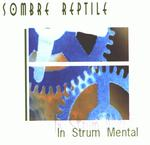

| Artist: | Sombre Reptile |
| Title: | In Strum Mental |
| Label: | Musea FGBG 4413 |
| Length(s): | 43 minutes |
| Year(s) of release: | 2002 |
| Month of review: | [04/2002] |
| 1) | Orient/Song | 3.33 |
| 2) | Barok/Song | 6.47 |
| 3) | Mandoline Noire | 3.32 |
| 4) | East/Song | 7.57 |
| 5) | Naja | 8.35 |
| 6) | Une Remarque Insidieuse | 5.44 |
| 7) | In Strum Mental | 6.39 |
Barok/Song starts with the hissy pipe synths that are so Miami Vice. The quickly played accordion like keys give a funny effect. Sort of okay, but for the guitars, that sound like Oldfield to me, nor do I fancy the strangled mouth organ towards the end.
Mandoline Noire is electric guitar based, giving it a somewhat more direct nature than the previous tracks. The extra bite in this track gives it something, but this effect is nullified by the boxy drums (apparently played by Minimum Vital member Berna).
East/Song sees the return of the theme of Orient/Song, but with a somewhat more dancy beat that I could've done without. Beside that the guitar and keys seem to get a little overheated as well. Interesting variation on a theme, in which I can't see enough strength to fill two tracks.
Naja once more combines the ethnic elements with progressive ones, using a theme very close to the one we already know. Apart from the somewhat irritating use of a vocoder, this track is a bit less neurotic than the previous ones, making it more palatable.
Une Remarque Insidieuse features some sounds that strike me as an electronic imitation of a zoo, accompanied by the returned neurotics. The guitar in this does betray the influence of King Crimson, though, with some playing very reminiscent of Red. This makes this easily one of the better tracks of the album.
That King Crimson influence is also present in In Strum Mental, of which the start especially reminds of eighties KC. This immediately states what I like about the track, I don't care though, for the loopy guitar jangling or the drums that are a bit too present.
You might want to check out the band's homepage at www.sombrereptile.fr.fm